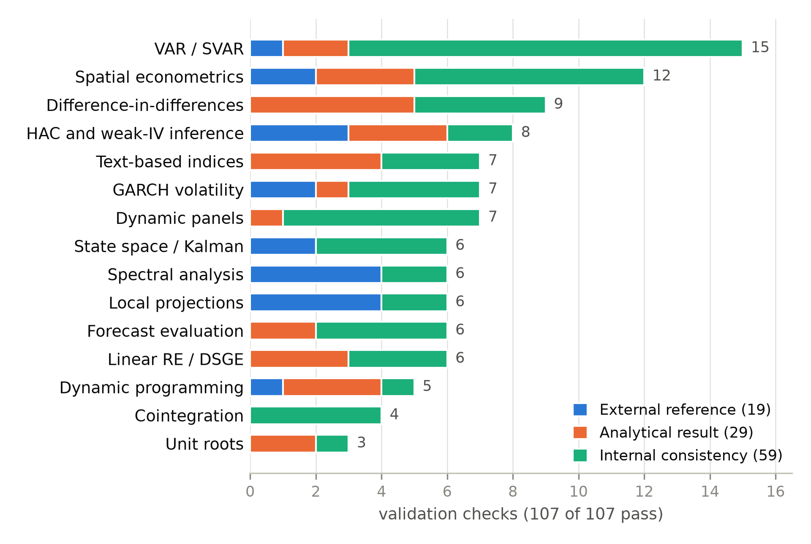

puremacro: browser-runnable empirical macroeconomics
in pure Python
15 August 2026
Summary
puremacro is a Python library for empirical
macroeconomics and quantitative macro modeling, implemented entirely on
the scientific-Python core — NumPy (Harris et al.
2020), SciPy (Virtanen et al. 2020), pandas, and
Matplotlib — with no compiled or specialized dependencies at runtime.
Because it avoids heavier libraries, it executes unchanged in the
browser through Pyodide (The
Pyodide development team 2024), on a tablet, or in a JupyterLite
notebook, as readily as on a workstation. The library spans the methods
an applied macroeconomist reaches for: reduced-form and structural
vector autoregressions (Sims 1980; Blanchard and Quah
1989), factor-augmented VARs (Bernanke et al. 2005), local
projections (Jordà
2005), ARCH/GARCH and GARCH-MIDAS volatility models (Engle 1982;
Bollerslev 1986), heteroskedasticity- and
autocorrelation-consistent inference (Newey and West 1987), dynamic-panel
and weak-instrument estimators (Anderson and Rubin
1949; Montiel Olea and Pflueger 2013), difference-in-differences
and synthetic control, value-function iteration, Sequence-Space HANK
general equilibrium (Auclert et al. 2021), mixed-frequency
nowcasting (Giannone et
al. 2008), integrated climate macroeconomics (Nordhaus 2018;
Golosov et al. 2014), and text-based uncertainty and narrative
burst indices (Baker et al.
2016).
Statement of need
Macroeconometrics and computational macro are usually taught and
practiced with tools that demand a substantial local installation — the
statsmodels (Seabold
and Perktold 2010), arch, and
linearmodels stack — or commercial software, such as MATLAB
for Dynare and most heterogeneous-agent toolkits. That barrier is
invisible to well-resourced users and decisive for everyone else:
students on tablets, instructors in low-bandwidth classrooms, and
researchers without budgets or administrative rights.
puremacro removes it. Because the library is pure
scientific-Python, a reader can open a browser and reproduce a
structural VAR, a local-projection impulse response, an Aiyagari/HANK
equilibrium, or a real-time GDP nowcast at zero cost, with nothing to
install.
Breadth alone is not trustworthy, so puremacro ships its
own evidence. A built-in validation gallery contains 73
cases that continuously check the library’s estimators against
independent references — statsmodels (Seabold and Perktold 2010),
arch, and linearmodels where a canonical
implementation exists, and closed-form solutions, published numbers, or
internal cross-method identities elsewhere — across thirteen subsystems
(). A companion replication gallery reproduces
published results from heterogeneous-agent, SVAR, and climate-economy
models. Both are wired into the CI workflows shipped with the package
and re-run in a single line,
puremacro.validation.scorecard(), including in the browser,
so a user can verify the library on the same machine that runs it. No
existing macro-econometrics package, to our knowledge, combines this
breadth with browser portability and a continuously verified,
self-contained correctness record.
Features
Time series, SVARs, and Identification: VAR, FAVAR,
BVAR (Minnesota), VECM, and TVP-VAR; structural identification via
Cholesky, long-run (Blanchard–Quah), sign and sign-zero restrictions,
proxy/external instruments, and narrative signs; impulse responses,
variance decompositions, and bootstrap bands.
Nowcasting and Machine Learning: mixed-frequency
Dynamic Factor Models (DFM) with ragged-edge EM imputation and news
decomposition; Elastic Net and Adaptive Lasso penalized
forecasting.
Single-equation and Panel: local projections
(including IV and panel), dynamic-panel GMM, HAC and
weak-instrument-robust Anderson-Rubin inference, synthetic
difference-in-differences, and synthetic control.
Computational and Climate Macro: Sequence-Space
HANK general equilibrium solve, value-function iteration, the endogenous
grid method, continuous-time HJB, and DICE-2016 integrated
climate-economy simulations.
Reproducibility and Teaching: an in-browser
JupyterLite playground with 36 bilingual (English/Spanish) interactive
showcase notebooks and empirical datasets.

Validation coverage: 73 cases across 13
subsystems, each checked against an independent reference.
Acknowledgements
The author thanks the scientific-Python and Pyodide communities,
whose work makes a browser-runnable macroeconometrics library
possible.
References
Anderson, T. W., and Herman Rubin. 1949. “Estimation of the
Parameters of a Single Equation in a Complete System of Stochastic
Equations.”The Annals of Mathematical Statistics 20
(1): 46–63. https://doi.org/10.1214/aoms/1177730030.
Auclert, Adrien, Bence Bardóczy, Matthew Rognlie, and Ludwig Straub.
2021. “Using the Sequence-Space Jacobian to Solve and
Estimate Heterogeneous-Agent Models.”Econometrica 89
(6): 3115–46. https://doi.org/10.3982/ECTA17434.
Baker, Scott R., Nicholas Bloom, and Steven J. Davis. 2016.
“Measuring Economic Policy Uncertainty.”The Quarterly
Journal of Economics 131 (4): 1593–636. https://doi.org/10.1093/qje/qjw024.
Bernanke, Ben S., Jean Boivin, and Piotr Eliasz. 2005. “Measuring
the Effects of Monetary Policy: A Factor-Augmented Vector Autoregressive
(FAVAR) Approach.”The Quarterly Journal of
Economics 120 (1): 387–422. https://doi.org/10.1162/0033553053327452.
Blanchard, Olivier Jean, and Danny Quah. 1989. “The Dynamic
Effects of Aggregate Demand and Supply Disturbances.”The
American Economic Review 79 (4): 655–73.
Engle, Robert F. 1982. “Autoregressive Conditional
Heteroscedasticity with Estimates of the Variance of United Kingdom
Inflation.”Econometrica 50 (4): 987–1007. https://doi.org/10.2307/1912773.
Giannone, Domenico, Lucrezia Reichlin, and David Small. 2008.
“Nowcasting: The Real-Time Informational Content of Macroeconomic
Data.”Journal of Monetary Economics 55 (4): 665–76. https://doi.org/10.1016/j.jmoneco.2008.05.010.
Golosov, Mikhail, John Hassler, Per Krusell, and Aleh Tsyvinski. 2014.
“Optimal Taxes on Fossil Fuel in General Equilibrium.”Econometrica 82 (1): 41–88. https://doi.org/10.3982/ECTA10217.
Jordà, Òscar. 2005. “Estimation and Inference of Impulse Responses
by Local Projections.”The American Economic Review 95
(1): 161–82. https://doi.org/10.1257/0002828053828518.
Montiel Olea, José Luis, and Carolin Pflueger. 2013. “A Robust
Test for Weak Instruments.”Journal of Business &
Economic Statistics 31 (3): 358–69. https://doi.org/10.1080/07350015.2013.806683.
Newey, Whitney K., and Kenneth D. West. 1987. “A Simple, Positive
Semi-Definite, Heteroskedasticity and Autocorrelation Consistent
Covariance Matrix.”Econometrica 55 (7): 703–8. https://doi.org/10.2307/1913610.
Nordhaus, William. 2018. “Projections and Uncertainties about
Climate Change in an Era of Minimal Climate Policies.”American Economic Journal: Economic Policy 10 (3): 333–60. https://doi.org/10.1257/pol.20170046.
Seabold, Skipper, and Josef Perktold. 2010. “Statsmodels:
Econometric and Statistical Modeling with Python.”Proceedings of the 9th Python in Science Conference, 92–96. https://doi.org/10.25080/Majora-92bf1922-011.
Virtanen, Pauli et al. 2020.
“SciPy 1.0: Fundamental Algorithms for Scientific
Computing in Python.”Nature Methods 17:
261–72. https://doi.org/10.1038/s41592-019-0686-2.